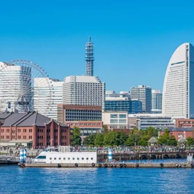

TSA->HND flight
時間: 0900-1250
從台北飛往東京，開始我們的旅程。
access to hotel
時間: 1300-1500
抵達酒店，準備開始探索銀座。
lunch
時間: 1500-1600
在銀座享用午餐，品嚐當地美食。

shopping
時間: 1600-1700
在銀座購物，探索當地的商店。
pokemon cafe
時間: 1700-1800
在銀座的寶可夢咖啡廳享受下午茶。

hotel rest
時間: 1800-2000
回到酒店休息，為晚餐做準備。

dinner
時間: 2000-2200
在居酒屋享用晚餐，僅限成人。
breakfast
時間: 0800-0900
在酒店享用早餐，開始新的一天。
train
時間: 0900-1000
乘坐火車前往橫濱，旅程約28分鐘。

gondola->hammerhead
時間: 1000-1100
乘坐纜車到達Hammerhead，欣賞美景。

cup noodle museum
時間: 1100-1200
參觀杯麵博物館，了解杯麵的歷史。

lunch
時間: 1200-1300
在彼得兔花園咖啡廳享用午餐。
shopping, osanbashi pier
時間: 1300-1700
在紅磚倉庫購物，參觀大棧橋碼頭。

ship access
時間: 1715-1735
乘船從紅磚倉庫到橫濱。

train
時間: 1740-1810
乘坐火車返回酒店。
dinner
時間: 2000-2200
在橫濱享用晚餐，僅限成人。

breakfast
時間: 0700-0800
在酒店享用早餐，開始新的一天。

hatobus trip
時間: 0840-
乘坐Hato巴士遊覽東京塔、淺草和晴空塔。
shopping
時間: 1000-1100
在晴空塔購物，探索當地商店。

Asakusa
時間: 1130-1230
參觀淺草寺，感受傳統文化。

lunch
時間: 1300-1400
在Shelton自助餐廳享用午餐。

Tokyo Tower
時間: 1430-1530
參觀東京塔，欣賞城市全景。

Tokyo station
時間: -1640
探索東京車站，感受繁忙的交通樞紐。
Tokyo station
時間: 1640-1800
繼續探索東京車站，享受購物和美食。
dinner
時間: 2000-2200
在燒肉店享用晚餐，僅限成人。

breakfast
時間: 0800-0900
在酒店享用早餐，開始新的一天。

train
時間: 0900-1000
乘坐火車前往明治神宮，旅程約20分鐘。

meijijingu
時間: 1000-1130
參觀明治神宮，感受神聖的氛圍。

asagaya
時間: 1130-1200
探索阿佐谷，感受當地生活。

lunch
時間: 1200-1400
在山本漢堡享用午餐。
asagaya syoutengai
時間: 1400-1500
在阿佐谷商店街購物，探索當地商店。
my home
時間: 1500-1600
回到家中，享受家庭時光。
zennfukuji koutuu kouen
時間: 1600-1700
參觀善福寺交通公園，享受戶外活動。
dinner
時間: 1900-2100
在壽司店享用晚餐，僅限成人。

optional:tsukiji market
時間: 0700-0800
參觀築地市場，感受當地的早晨活力。

breakfast
時間: 0800-0900
在酒店享用早餐，開始新的一天。

hotel checkout/shopping
時間: 0900-1100
辦理酒店退房，進行最後的購物。

train
時間: 1100-1200
乘坐火車前往羽田機場，旅程約1小時。

HND->TSA flight
時間: 1415-1715
從羽田飛往台北，結束愉快的旅程。